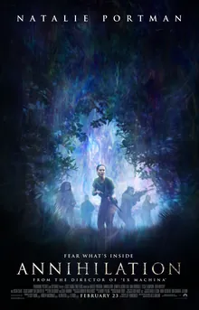

The genetics
Biology, rather than genetics in a strict sense, is the core of the film, in which biology and physics merge in a strange world. Inside the Shimmer, an alien presence refracts living things "the way a prism refracts light", including their DNA, so that species mix: plants take human shapes, animals combine traits, a soldier's body becomes a colony of lichens, and a bear absorbs a dying woman's voice. Lena, a cell biologist, provides the scientific point of view, while Ventress, who has cancer, is drawn to the Shimmer as to a kind of transformation. Scientists are portrayed as curious and courageous professionals, each also driven by personal damage. The film is not intended as a plausible scenario: DNA from different organisms does not blend in this way. Its imagery of uncontrolled cell division and mutation invites comparison with cancer, a reading the film encourages through Ventress's illness.
How genetics is portrayed
- Overall portrayal of genetics
- negative Mutation and genetic mixing appear as a beautiful but terrifying, cancer-like force that dissolves identity, and the film ends uneasily on the shimmering eyes of the returned couple; no human genetic science is practised and the scientists are courageous observers.
- Outcome of the genetic intervention
- negative The DNA refraction produces monstrous hybrids, kills Cassie and Anya, absorbs Josie and Ventress and replaces Kane with a double; the Shimmer is destroyed, but Lena and Kane are left altered.
- The alien presence of the Shimmer
- neutral Aim: not stated (not applicable). The extraterrestrial force that arrived with the meteor (a non-human entity, hence 'other') refracts living things' DNA, mixing species, copying Kane and forming a double of Lena from her blood; the film never assigns it a purpose or moral character. The human scientists only observe and do no genetic work.
The story
Lena, a cell biology professor and former soldier, is interrogated about an expedition into "the Shimmer", an expanding zone around a lighthouse on the Florida coast, where a meteor struck three years earlier. Her husband Kane, a soldier, had returned home from an earlier expedition, gravely ill and confused. Lena joins a team of women led by the psychologist Dr. Ventress, with Josie, Cassie and Anya. Inside, they lose track of time, find hybrid plants and animals, an alligator with shark-like rows of teeth, and a video showing the fate of Kane's team. A mutated bear kills Cassie and later Anya, and Josie, who theorises that the Shimmer refracts all living things, including their DNA, lets herself turn into a plant-like figure. At the lighthouse, Lena learns that Kane killed himself and that his double returned in his place, and a copy of herself forms from her blood. She destroys it with a grenade, and the Shimmer vanishes.